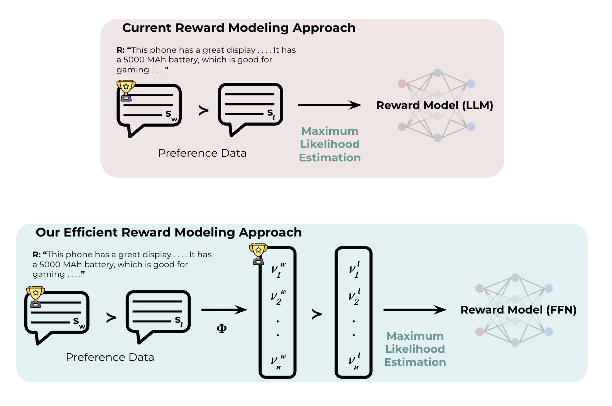

My MS thesis kept returning to one question: when we train a model to write a summary, what exactly are we rewarding? This post follows how my answer changed, from rewards I picked by hand, to rewards learned from human preferences, to a middle path that takes a little from each.
Many right answers
Supervised fine-tuning learns a mapping from input to output by maximum likelihood: at every position, raise the probability of the reference token. That teaches the model a correct output. Language rarely has only one. The same content can be written many ways:
- The quick brown fox jumps over the lazy dog.
- The swift brown fox leaps over the sleepy dog.
- The agile brown fox leaps across the sluggish dog.
A token-by-token objective counts the last two as mostly wrong. Reinforcement learning lifts that restriction. The model generates a whole output, a reward function scores it, and the REINFORCE trick turns that score into a gradient, even though the scoring itself is not differentiable. The reward can be any measure of quality we like. So the real question becomes: which reward?
Interactive Score a candidate against the reference, the way a reward function would. Edit it, or try the presets.
ReferenceThe quick brown fox jumps over the lazy dog.
Paraphrases are from my lecture slides; * written for this demo. Scores are computed in your browser on lower-cased words. Token match is position-by-position agreement, what maximum likelihood rewards. ROUGE-L is the F1 of the longest common subsequence; BLEU is the mean of cumulative BLEU-1 to BLEU-4.
Two things stand out. Adding a single word at the front wrecks the token-by-token score while the overlap rewards barely move. And flipping the meaning earns as much ROUGE-L as the second paraphrase, and about twice the BLEU of either. Lexical rewards are more forgiving than maximum likelihood, but they do not read.
Thesis: let the task define the reward
My first answer was to ask what the task needs. For query-focused summarization, a good summary is relevant to the query, relevant to the document, covers every aspect, and is concise, fluent and coherent. Some of these properties are specific to query-focused summarization, some to summarization in general, and some to language. Each is a reward we would want to optimize.
Writing them down as functions is the hard part, and every simplifying assumption risks pulling us away from the original goal. Earlier work on RL for summarization optimized one property at a time:
| Reward | Promotes | Cannot promote |
|---|---|---|
| ROUGE (Paulus et al., 2018) | Lexical overlap | Semantic diversity |
| BERTScore (Li et al., 2019) | Semantic diversity | Informativeness |
| Saliency (Pasunuru & Bansal, 2018) | Coverage | Faithfulness |
| Entailment (Roit et al., 2023) | Faithfulness | – |
Our shortcut was to notice that the reference summary already has all of these properties. So instead of rewarding each property, reward closeness to the reference, both lexically and semantically. ROUGE and BLEU cover the lexical side. For the semantic side, we built a passage embedding on the Cluster Hypothesis: passages that answer similar information needs tend to cluster together. Trained on Reddit answers to the same questions, it gives a similarity reward that does not punish rewording.
In our EMNLP 2023 paper, policy-gradient models trained this way improved ROUGE-L by 10 points over the previous state of the art on ELI5. The more telling test was replacing the document with a random one. On our test set, the supervised model lost only 5.4 ROUGE-L points, because it was largely answering from the query. The RL models lost 15.8 to 17.8 points, because they were actually reading the document.
Rewards also leave fingerprints. ROUGE pays for overlap, so our RL summaries grew verbose and drifted into related but unnecessary topics, all while the reward kept rising. We needed a stricter, precision-oriented signal.
Antithesis: learn the reward instead
Around the same time, preference reward modelling matured with InstructGPT. Instead of listing rewards, you learn one. People struggle to give a summary a score out of ten, but they can easily say which of two summaries is better. That single choice reflects every property at once, including the implicit ones nobody writes down: don’t make things up, don’t be mean. Preference is one reward to rule them all.
The Bradley–Terry model turns comparisons into a hidden score. If \(r\) is the reward, the probability that summary \(A\) is preferred over \(B\) is
Training a reward model means finding the \(r\) under which the preferences people actually gave are most likely.
Interactive Only the gap between two rewards matters. Move it and watch the chance that a person prefers \(A\).
It worked remarkably well. InstructGPT’s 1.3B model was preferred over the 175B GPT-3, with about a hundredth of the parameters.
The catch
Preferences are subjective, and they depend on the task. A made-up detail is welcome in fiction story (creative) writing and a failure in summarization. So a general-purpose reward model may not serve a specific task, and a specific task needs its own preference data, usually tens of thousands of pairs. For most tasks, that is too expensive.
Synthesis: decompose the reward
So we combined the two ideas, and split the reward model into two stages.
- Domain experts name the features that matter. For e-commerce opinion summaries: aspect coverage, opinion faithfulness, opinion coverage, conciseness, relevance, hallucination and language correctness. An LLM, Mistral-7B, scores each summary on each feature. This stage needs no training data.
- A small feed-forward network learns from human preferences how to combine those scores into one reward.
The features compress most of the variation in the data, so the second stage has much less to learn.

In our paper on efficient reward modelling, this needed just 940 preference pairs, a 21× reduction. The resulting policy advanced the state of the art by about 4 ROUGE-L points, human evaluators preferred it over the previous best 68% of the time, and it avoided the alignment tax. The features also make the reward readable: hallucination and opinion faithfulness turned out to carry the most weight.
Interactive A toy version of the argument, not the paper’s experiment. Synthetic summaries have 7 hidden quality features; preferences are drawn from a Bradley–Terry model. One reward model sees the 7 features. The other sees a 128-dimensional raw representation in which quality is mixed with variation unrelated to it, such as topic or style. Both are trained in your browser.
Show values as a table
Accuracy is agreement with the true preference on 1,500 held-out pairs, averaged over three runs. Each reward model is a Bradley–Terry logistic regression. With little unrelated variation, the two start close. The more there is, the further behind the raw model falls when pairs are few: the features help because they throw away what does not matter.
Who scores the features?
The first stage leans on an LLM to judge summaries, which raises the obvious question: can LLMs judge summaries at all? In our ACL 2024 paper on opinion summary evaluation, a single prompt, Op-I-Prompt, in which only the metric definition changes between dimensions, reached an average Spearman correlation of 0.70 with human judgments across seven dimensions, ahead of earlier methods. LLM judges are not people, but they are a promising source of feedback where people are too slow or too expensive.
Where this leaves me
My takeaway from the thesis: task-specific reward modelling is a cost- and time-efficient way to use RL for text generation, and it brings RLHF to tasks where preference data is scarce. A few questions I am leaving with:
- Does the decomposition carry over from opinion summarization to other generation tasks?
- Newer methods such as DPO and ReST change the algorithm rather than the reward, and DPO skips the reward model entirely. In our opinion-summarization experiments, DPO on the same data trailed the decomposed reward (ROUGE-L 15.03 against 19.23 on Amazon-R). How the two ideas combine is open.
- Can feedback from LLMs replace part of the human preference data that is still needed?
Sources
My papers
My talks
- Alignment, Preference Modelling, RLHF · course module for Qualcomm engineers
- Reinforcement Learning in Natural Language Generation · lecture, IIT Bombay
- Leveraging Domain Knowledge for Efficient Reward Modelling in RLHF · RISC 2024
- Task-Aligned Reward Modeling for Reinforcement Learning in Text Summarization · my MS thesis work